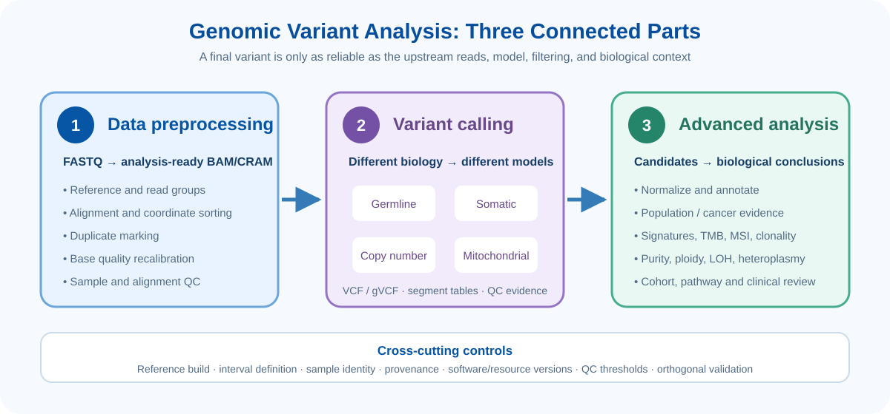
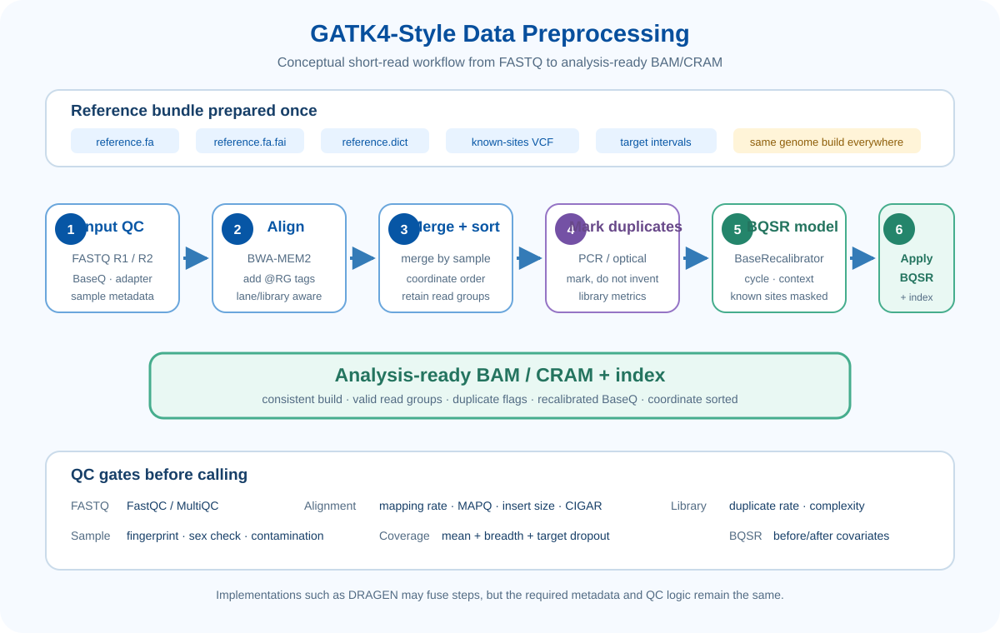
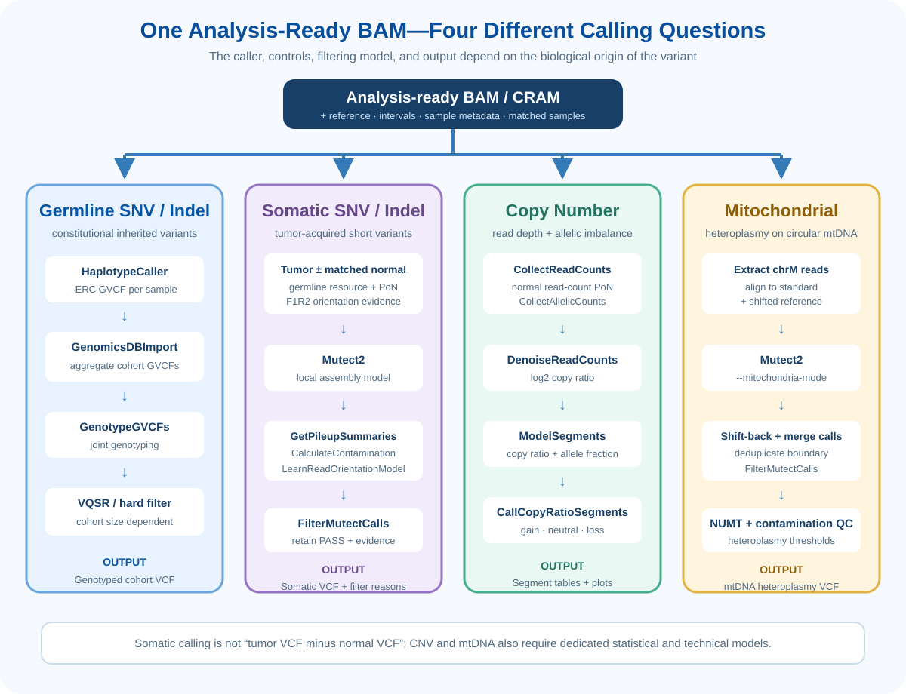
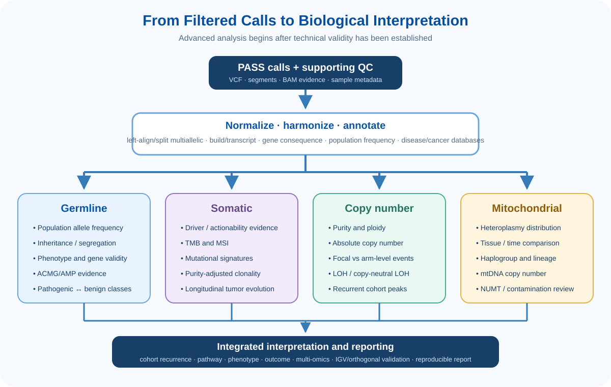

Learning Objectives
- GATK4 Best Practices의 전처리 순서와 각 단계가 해결하는 기술적 문제를 설명할 수 있다.
- Read group, duplicate marking, BQSR와 analysis-ready BAM/CRAM의 의미를 이해한다.
- Germline, somatic, copy-number, mitochondrial calling의 입력자료·대조군·출력을 구분할 수 있다.
- GVCF와 VCF, joint genotyping과 tumor–normal calling의 차이를 설명할 수 있다.
- Variant annotation, prioritization, mutational signature, TMB/MSI, clonality, LOH와 heteroplasmy의 역할을 이해한다.
- 최종 callset만 보지 않고 upstream QC와 read-level evidence를 함께 평가할 수 있다.
Analysis Overview
Variant analysis는 FASTQ에서 VCF를 만드는 단일 명령이 아닙니다. 첫째, read를 정확한 reference에 배치하고 기술적 오류를 통제한 analysis-ready BAM/CRAM을 만듭니다. 둘째, 변이의 생물학적 기원에 맞는 caller와 대조군을 선택합니다. 셋째, 후보 변이를 정규화·주석화하고 sample·cohort·질환 맥락에서 해석합니다.

Data Preprocessing: GATK4 Best Practices
GATK4 전처리의 목적은 read의 정렬 위치, sample/library 정보, 중복 여부와 base quality를 caller가 일관되게 사용할 수 있는 상태로 만드는 것입니다. 아래 순서는 Illumina short-read DNA sequencing을 기준으로 한 개념적 흐름이며, DRAGEN 같은 통합 pipeline에서는 여러 단계가 한 번에 수행될 수 있습니다.

1. Reference bundle과 분석 범위를 먼저 고정한다
| 자료 | 역할 | 확인사항 |
|---|---|---|
reference.fa | Read alignment와 REF allele의 기준 | GRCh37/GRCh38 등 build와 primary/ALT/decoy 구성 |
.fai / .dict | Reference의 빠른 접근과 contig 순서·길이 제공 | FASTA와 함께 생성된 동일 bundle인지 확인 |
| Known-sites VCF | BQSR에서 실제 polymorphism을 sequencing error로 학습하지 않도록 masking | Reference build와 contig 이름 일치 |
| Target interval | WES/panel capture 영역과 calling 범위 정의 | Padding 포함 여부와 BED/interval_list 좌표체계 |
| Population/PON resources | Somatic germline prior, artifact 제거, CNV denoising | 분석 assay·build·population에 적절한지 확인 |
chr1/1 표기가 다르면 오류가 나거나 더 위험하게는 잘못된 위치에 주석이 붙을 수 있습니다.2. FASTQ QC와 trimming 여부를 결정한다
FastQC/MultiQC로 per-base quality, adapter, read length, N content, duplication과 GC 분포를 확인합니다. Trimming은 adapter가 실제로 남았거나 낮은 품질 말단이 downstream 분석을 방해할 때 수행합니다. 단순히 Warning이 있다는 이유로 일률적으로 자르면 짧아진 read 때문에 오히려 mapping uniqueness가 떨어질 수 있습니다.
3. Read group을 포함하여 reference에 정렬한다
BWA-MEM2 같은 aligner로 read를 reference에 배치합니다. 이때 @RG 정보는 sample, library, platform unit과 sequencing platform을 구분하며 BQSR과 sample별 분석에 사용됩니다.
| Read-group tag | 의미 | 예시 |
|---|---|---|
SM | Biological sample 이름 | Patient01_Tumor |
LB | Library | Patient01_T_Lib1 |
PU | Platform unit; 보통 flow cell/lane/barcode 조합 | FC001.2.ATCACG |
PL | Platform | ILLUMINA |
ID | Read group의 고유 ID | FC001.2 |
Lane별 read group을 유지한 채 정렬한 뒤 동일 sample의 자료를 병합하고 genomic coordinate 순으로 정렬합니다. 서로 다른 biological sample을 하나의 BAM으로 단순 병합하면 안 됩니다.
4. Duplicate를 표시한다
PCR 또는 optical duplicate는 동일한 원래 분자를 여러 번 관측한 것처럼 보여 depth와 VAF를 부풀릴 수 있습니다. MarkDuplicates 또는 MarkDuplicatesSpark는 동일한 시작·끝 위치 등의 정보를 이용해 duplicate 후보에 flag를 부여합니다. 일반적인 short-variant workflow에서는 read를 물리적으로 삭제하기보다 표시하여 caller가 제외하거나 적절히 처리하게 합니다.
5. BQSR: Base Quality Score Recalibration
BaseRecalibrator는 reported quality, machine cycle, sequence context와 read group에 따른 실제 mismatch 패턴을 학습합니다. Known-sites는 진짜 변이가 오류로 학습되는 것을 줄이는 데 사용합니다. 이어 ApplyBQSR가 모델을 BAM/CRAM의 base quality에 적용합니다.
각 base observation의 오류확률이 경험적 데이터와 더 잘 맞도록 quality score를 조정합니다.
염기서열 자체를 수정하거나 variant를 확정하지 않습니다. BQSR는 variant filtering인 VQSR와도 다른 과정입니다.
Preprocessing QC: Calling 전에 멈춰 확인할 것
| QC 영역 | 대표 지표 | 문제가 있을 때 의심할 원인 |
|---|---|---|
| Sample identity | Fingerprint concordance, sex concordance, contamination | Sample swap, cross-contamination, tumor/normal pairing 오류 |
| Alignment | Mapping rate, MAPQ, secondary/supplementary alignment | 잘못된 reference, 오염, 반복서열, read 품질 |
| Paired-end | Proper-pair rate, insert-size distribution | Library size selection, chimeric fragment, orientation 오류 |
| Library | Duplicate rate, estimated library size | 낮은 투입량, 과도한 PCR, over-sequencing |
| Coverage | Mean depth, ≥10×/20×/30× breadth, target dropout | Capture 실패, GC bias, 불충분한 output |
| BQSR | Cycle/context별 empirical vs reported quality | Read-group 누락, 부적절한 known-sites, run-specific error |
이 기준을 통과한 coordinate-sorted, duplicate-marked, BQSR-applied BAM/CRAM과 index를 analysis-ready 자료로 사용합니다. 다만 “analysis-ready”는 모든 variant가 정확하다는 의미가 아니라, caller가 요구하는 기술적 전처리가 완료되었다는 뜻입니다.
Variant Calling
Germline, somatic, copy number와 mitochondrial variant는 생성되는 생물학적 과정과 관측되는 신호가 다릅니다. 따라서 같은 VCF를 만든 뒤 이름만 바꾸는 것이 아니라 입력자료, 대조군, statistical model과 필터링을 처음부터 다르게 설계해야 합니다.

| 분석 | 핵심 질문 | 이상적인 입력/대조군 | 대표 출력 |
|---|---|---|---|
| Germline | 개인이 선천적으로 가진 genotype은 무엇인가? | Normal DNA; cohort 또는 family | Joint-genotyped VCF |
| Somatic | Tumor/clone에서 후천적으로 생긴 변이는 무엇인가? | Tumor + matched normal, PoN, germline resource | Filtered somatic VCF |
| Copy number | 어느 구간이 gain/loss/LOH 되었는가? | Read counts + allelic counts; normal PoN 또는 matched normal | Segment/call tables, plots |
| Mitochondrial | mtDNA variant와 heteroplasmy는 어느 정도인가? | chrM reads, standard + shifted mt reference | mtDNA VCF with allele fraction |
1. Germline SNV and Indel Calling
말초혈액·타액 등 normal genomic DNA에서 개인의 constitutional variant를 찾는 분석입니다. GATK HaplotypeCaller는 변이 가능성이 있는 active region에서 read를 국소적으로 재조립하여 SNV와 small indel을 함께 평가합니다.
HaplotypeCaller -ERC GVCF→GenomicsDBImport→GenotypeGVCFs→VQSR / hard filtering
왜 sample별 GVCF를 만드는가?
일반 VCF는 주로 variant site를 기록하지만, GVCF는 non-variant block까지 포함해 각 sample이 해당 위치에서 어떤 근거로 reference인지 표현합니다. Sample별 GVCF를 저장하면 새로운 sample이 추가될 때 FASTQ부터 다시 분석하지 않고 cohort-level joint genotyping을 확장할 수 있습니다.
- Joint genotyping: 여러 sample의 evidence를 같은 locus에서 함께 평가해 genotype을 일관되게 결정합니다.
- VQSR: 충분히 큰 callset과 신뢰할 training resources가 있을 때 annotation 조합을 모델링합니다.
- Hard filtering: 작은 cohort 또는 VQSR 조건이 맞지 않을 때 사전에 정한 QC 기준을 적용합니다.
2. Somatic SNV and Indel Calling
Somatic calling은 tumor VCF에서 normal VCF를 단순히 빼는 과정이 아닙니다. Mutect2는 tumor와 normal read evidence를 함께 모델링하며, population germline resource와 Panel of Normals(PoN)를 이용해 germline 가능성과 반복되는 기술적 artifact를 평가합니다.
Mutect2→Contamination / orientation model→FilterMutectCalls
Mutect2 이후에도 필요한 모델
GetPileupSummaries와CalculateContamination으로 cross-sample contamination과 segmentation 정보를 추정합니다.- F1R2 자료와
LearnReadOrientationModel로 FFPE 등에서 나타나는 orientation-specific artifact를 학습합니다. FilterMutectCalls가 이러한 evidence를 함께 이용해 각 call에 PASS 또는 구체적인 filter reason을 부여합니다.
3. Copy-Number Variant Analysis
CNV는 한 위치의 ALT read를 세는 대신 genomic interval별 read depth 변화와 heterozygous site의 allele imbalance를 이용합니다. GATK somatic CNV workflow에서는 normal sample로 만든 read-count PoN을 이용해 systematic bias를 줄이고, tumor의 denoised log2 copy ratio와 allelic counts를 함께 segment합니다.
CollectReadCounts+Read-count PoN→DenoiseReadCounts+CollectAllelicCounts→ModelSegments→CallCopyRatioSegments
| 신호 | 의미 | 주의점 |
|---|---|---|
| Log2 copy ratio | 기대 coverage 대비 상대적 gain/loss | Purity와 ploidy 때문에 같은 copy number도 amplitude가 달라짐 |
| BAF / minor-allele fraction | Heterozygous site에서 두 allele의 균형 | LOH와 subclonality 정보를 주지만 informative SNP가 필요 |
| Segment | 유사한 copy-ratio/allelic signal을 공유하는 연속 구간 | 짧은 segment는 noise일 수 있고 breakpoint 해상도는 assay에 의존 |
| Gain / neutral / loss | 상대적인 copy-ratio 상태 | 절대 copy number와 동일하지 않으며 purity/ploidy 추정이 필요 |
Somatic CNV와 germline CNV는 구분한다
ModelSegments 기반 workflow는 주로 somatic copy-ratio alteration을 다룹니다. Cohort의 rare/common inherited CNV를 찾는 germline 목적에는 GermlineCNVCaller처럼 systematic bias와 population model을 함께 학습하는 별도 gCNV workflow를 사용합니다.
4. Mitochondrial Variant Calling
미토콘드리아 유전체는 작고 원형이며 한 세포 안에 여러 copy가 존재합니다. 따라서 diploid nuclear genotype 대신 heteroplasmy, 즉 전체 mtDNA molecule 중 ALT allele이 차지하는 비율을 평가합니다.
Mutect2 --mitochondria-mode→Shift back / merge→FilterMutectCalls
왜 shifted reference가 필요한가?
Linear FASTA는 원형 mtDNA를 임의의 한 지점에서 끊어 표현합니다. 이 인공적인 시작/끝 경계를 가로지르는 read는 정렬과 variant calling이 불리할 수 있습니다. 경계를 반대 위치로 옮긴 shifted reference에서도 분석한 뒤 좌표를 원래 reference로 되돌려 합치면 이 구간을 보완할 수 있습니다.
- Heteroplasmy: 낮은 allele fraction 변이일수록 depth, base/mapping quality와 strand evidence가 중요합니다.
- NUMT: Nuclear genome에 삽입된 mtDNA 유사서열이 chrM read처럼 잘못 정렬될 수 있습니다.
- Contamination: 다른 sample의 mtDNA는 낮은 heteroplasmy처럼 보일 수 있어 sample identity 검토가 필요합니다.
- Tissue specificity: Heteroplasmy는 조직, 나이, 질환과 시간에 따라 달라질 수 있습니다.
Advanced Analysis
Advanced analysis는 PASS variant를 더 많이 필터링하는 단계가 아니라, 기술적으로 신뢰할 수 있는 call을 생물학적 질문과 연결하는 과정입니다. Germline과 somatic 결과는 같은 gene annotation을 공유할 수 있지만, population frequency·inheritance·actionability·clonality처럼 평가해야 할 근거는 다릅니다.

1. Variant normalization and annotation
- Normalization: Indel left-alignment, multiallelic splitting과 REF/ALT 확인으로 같은 변이가 같은 방식으로 표현되게 합니다.
- Gene/transcript consequence: VEP 또는 Funcotator로 gene, transcript, exon, coding consequence와 protein change를 연결합니다.
- Population evidence: gnomAD 등에서 allele frequency와 population-specific 빈도를 확인합니다.
- Disease/cancer evidence: ClinVar, ClinGen, COSMIC 등에서 질환 연관성과 암 재발성 근거를 연결합니다.
- Version control: Genome build, MANE/GENCODE/Ensembl transcript와 database release를 결과에 기록합니다.
2. Germline advanced analysis
3. Somatic advanced analysis
| 분석 | 질문 | 핵심 주의점 |
|---|---|---|
| Driver/actionability | 종양 발생·치료·예후와 연관된 변이인가? | Cancer type, evidence level, drug indication과 germline 가능성 구분 |
| TMB | 평가 가능한 Mb당 somatic mutation 수는 얼마인가? | Panel territory, callable bases, filtering과 assay-specific validation |
| MSI | Microsatellite length instability가 존재하는가? | Assay와 caller에 맞는 validated threshold, tumor purity |
| Mutational signature | 어떤 endogenous/exogenous mutational process가 흔적을 남겼는가? | Mutation 수와 genome territory가 부족하면 과적합 가능 |
| Clonality | 변이가 clonal인가 subclonal인가? | VAF만으로 판단하지 말고 local copy number, purity와 ploidy 보정 |
| Tumor evolution | Primary–metastasis 또는 치료 전후 clone이 어떻게 변했는가? | 동일 환자 multiple region/time point와 sampling bias 고려 |
4. CNV and mitochondrial advanced analysis
Purity·ploidy를 추정해 absolute copy number, focal/arm-level event, amplification/deletion, LOH와 copy-neutral LOH를 구분합니다. Cohort에서는 recurrent peak와 affected genes/pathways를 평가합니다.
Heteroplasmy 분포, tissue/time 변화, haplogroup, mtDNA copy number와 phenotype을 연결합니다. 낮은 heteroplasmy는 NUMT·contamination·strand/read-position artifact를 반드시 재검토합니다.
5. Integrated review and validation
중요 변이는 IGV에서 depth, ALT read, read direction, base position, MAPQ, soft clipping과 주변 반복서열을 확인합니다. 연구 목적과 변이 유형에 따라 Sanger, ddPCR, independent library, long-read sequencing 또는 다른 assay로 검증합니다. 모든 결과에는 software, parameter, reference/resource version과 필터링 이력을 남겨야 합니다.
References & Official Workflows
- GATK. Data pre-processing for variant discovery.
- GATK. Base Quality Score Recalibration.
- GATK. Germline short variant discovery.
- GATK. HaplotypeCaller GVCF mode and joint genotyping.
- GATK. Somatic short variant discovery.
- GATK. Panel of Normals.
- GATK. Somatic copy-ratio workflow, part I.
- GATK. Somatic copy-ratio workflow, part II.
- GATK. Mitochondrial short variant discovery.
- GATK. Funcotator functional annotation.
- Ensembl. Variant Effect Predictor.
- ClinGen. Sequence Variant Interpretation Working Group.
- NCI. Integrative Mutational Signature Portal.
Key Takeaways
- GATK4 전처리는 reference와 read-group 일치, duplicate marking, BQSR와 QC를 통해 caller가 사용할 evidence를 표준화합니다.
- BQSR는 base quality를 재보정하며 variant filtering인 VQSR와 다릅니다.
- Germline은 GVCF와 joint genotyping, somatic은 matched normal·PoN·contamination/artifact model이 핵심입니다.
- CNV는 read depth와 allele imbalance를 segment하며, mitochondrial 분석은 원형 유전체와 heteroplasmy를 고려합니다.
- Advanced analysis는 annotation뿐 아니라 inheritance, driver, TMB/MSI, signature, clonality, purity/ploidy, LOH와 heteroplasmy를 질문에 맞게 연결합니다.
- 최종 결론은 VCF 한 줄이 아니라 upstream QC, BAM evidence, database version과 검증 결과를 포함해야 합니다.
Check Your Understanding
- BQSR에서 known-sites가 필요한 이유와 BQSR가 염기서열 자체를 수정하지 않는다는 말의 의미는 무엇인가요?
- GVCF와 일반 VCF의 차이, joint genotyping이 cohort 분석에 유리한 이유를 설명해보세요.
- Matched normal, somatic PoN과 population germline resource는 각각 어떤 문제를 해결하나요?
- 종양 purity가 낮을 때 somatic VAF와 CNV log2 ratio는 어떻게 달라질 수 있나요?
- Mitochondrial calling에서 shifted reference와 NUMT 검토가 필요한 이유는 무엇인가요?